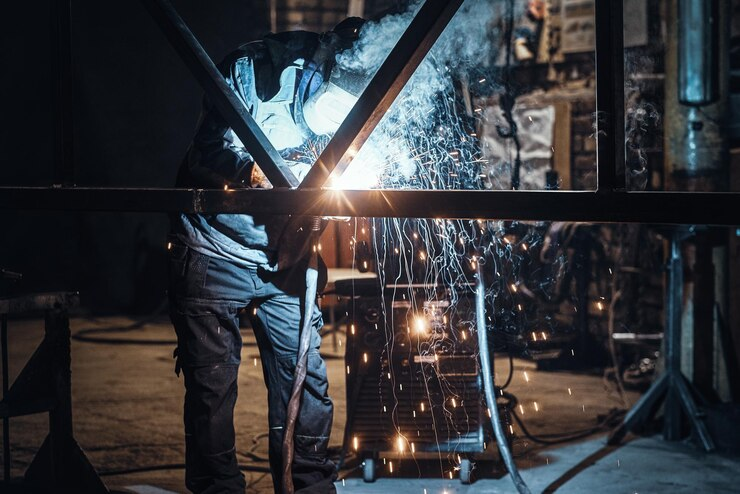
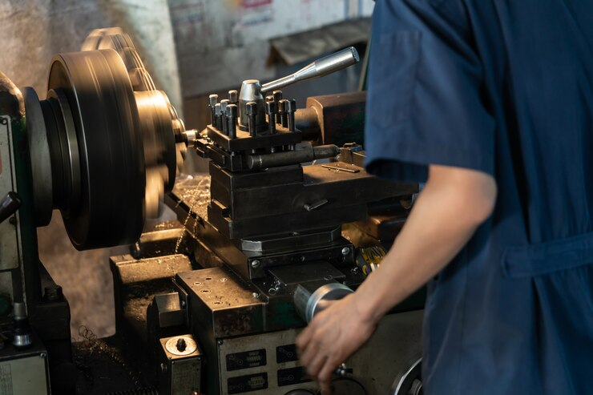
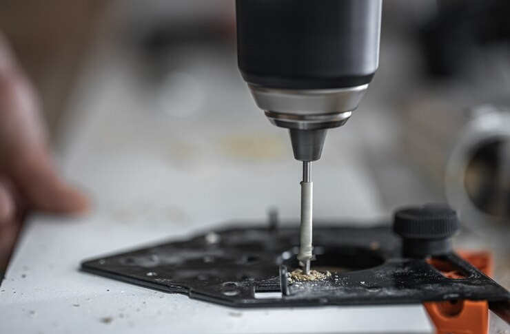

Manufacturing Unit
A manufacturing unit, also known as a production facility or factory, is a place where raw materials or components are transformed into finished goods through various processes and operations. Manufacturing units play a crucial role in the production and supply chain of goods across various industries.

Heavy Fabrication
Heavy fabrication refers to the process of manufacturing large and bulky metal structures, components, or equipment that are typically used in industries such as construction, infrastructure, energy, and manufacturing. This type of fabrication involves working with thick and heavy materials, often requiring specialized equipment, skilled labor, and precise engineering.

Heavy Machining
Heavy machining refers to the process of manufacturing large and complex metal parts or components using specialized machines and tools. This type of machining is typically required for applications where precision, durability, and strength are essential. Industries such as aerospace, energy, automotive, and defense often utilize heavy machining for the production of critical components.
Custimized Eng Projects
Customized engineering projects refer to initiatives that are tailored to meet specific and unique requirements of a client or end-user. These projects involve the application of engineering principles and techniques to design, develop, and deliver solutions that address specific challenges or opportunities.

Structural Fabrication
Structural fabrication involves the process of manufacturing structural components or systems used in construction and various industrial applications. The goal is to create durable and reliable structures that can support loads, resist forces, and meet design specifications.

Tubesheet Drilling
Tubesheet drilling is a machining process specifically applied to tubesheets, which are components used in heat exchangers and other types of pressure vessels. The tubesheet provides support for tubes, and drilling is required to create holes in the tubesheet for the insertion of these tubes. The drilling process is critical to ensure precise alignment, adequate clearance, and secure attachment of the tubes.
Butterfly Wall
If "Butterfly Wall" is a term used within a specific industry or fabrication context, I recommend checking recent publications, industry journals, or consulting with experts in the field for the latest information. Additionally, if there's a specific company or project associated with the term, their official documentation or communications might provide insights into the meaning of "Butterfly Wall" in the context of fabrication.
Damper Wall
"Damper Wall" does not refer to a widely recognized or standardized concept. However, based on the words "damper" and "wall," it could potentially refer to a structure or system designed to control or dampen certain forces, such as vibrations, airflows, or acoustic .
In structural engineering or construction, a wall designed to dampen vibrations or oscillations could be referred to as a "vibration damper wall." This could be relevant in buildings or structures where mitigating vibrations is important.
Fabricated Value
The term "fabricated value" is not a standard term with a widely recognized definition. However, based on the individual meanings of the words, it could be interpreted in different ways in different contexts.
In a manufacturing context, "fabricated value" might refer to the value added to a product through the fabrication or manufacturing process. This could include the value contributed by raw materials, labor, technology, and other factors involved in the production.
Non-standard Flanges
The term "non-standard flanges" generally refers to flanges that do not conform to standard specifications or dimensions commonly used in the industry. Flanges are essential components in piping systems, used for connecting pipes, valves, and other equipment. Standard flanges are designed according to recognized standards such as ASME B16.5, ASME B16.47, EN 1092-1, or other regional and international standards.